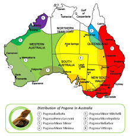
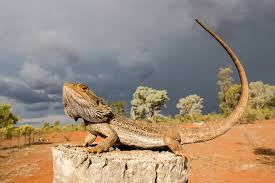
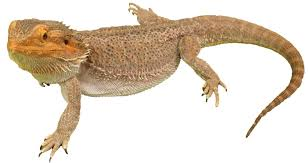
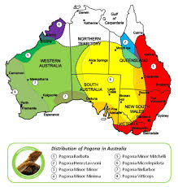
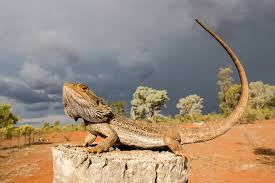
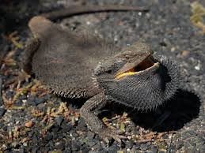
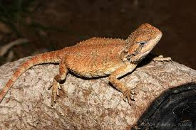

|  |
|
Here is an image of where bearded dragon's reside  |
|
Example of a reptile rocky enclosure background
|
|
Image of a bearded dragon in its natural habitat  |
Bearded dragons are one of, if not the most popular lizard species; unfortunately because they are so common they often are abused due to the lack of research people do before buying one. They are a desert species found in australia, and require a minimum of a 4 * 2 * 2 feet enclosure, but its highly encouraged to get a bigger one if you can.
bearded dragon are omnivores, this means they eat plants, and insects.
A small list of stuff they enjoy include:
While under 1 year old their diet should be 80% insects, and 20% greens.
adults on the other hand need a diet of 60-70% greens, and 30-40% insects
make sure to dust their food with calcium and vitamin D3 supplements to prevent deficiencies.
when basking bearded dragons usually expand their body to become more flat do absorb more heat,
because of this flatness the common name for this is "pancaking"
bearded dragons communicate by head bobbing, waving their hand, and puffing their beards
bearded dragons have a "third eye" called the parietal eye, which helps them track light above their head,
this is because it's useful for seeing birds
for more information on this lizard; go and visit the wikipedia here
some youtube care guides I HEAVILY reccomend you watch, especially if you are considering getting one can be found
here,
here, and
here.
I also highly reccomend you check out even more videos from them covering beareded dragons
for more ideas on food look here
| bearded dragon picture | common name | scientific name | average size |
|---|---|---|---|
|  | eastern bearded dragon | Pogona Barbata | 20-24 inches |
 |
Rankin's dragon | Pogona Henrylawsoni | 10-12 inches |
|  | Kimberley bearded dragon | Pogona microlepidota | 4-6 inches |
 |
Mitchell's Bearded Dragon | Pogona Minor | 12-16 inches |